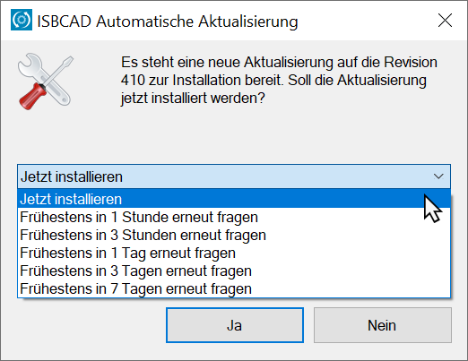
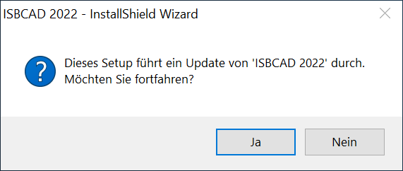
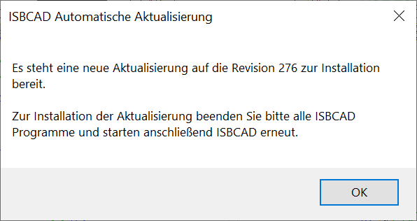
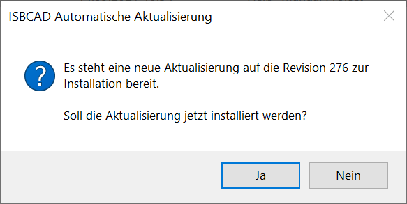

|
Allgemeine Hinweise: |
|
·ISBCAD Server-Versionen werden lediglich auf Aktualität geprüft. Wenn auf unserem Server eine aktuellere Version vorliegt, erhalten Sie eine entsprechende Meldung; die Version wird NICHT automatisch installiert. Wenden Sie sich für den Download und für die Installation ggf. an Ihren Systemadministrator. Siehe: Aktualisierung auf Server-Betriebssystemen ·Die automatische Aktualisierung kann ein- bzw. ausgeschaltet werden. Erfordert Administratorrechte. Siehe: Automatische Aktualisierung aktivieren/deaktivieren |

Wenn die automatische Aktualisierung eingerichtet ist (Standardeinstellung), vergleicht ISBCAD während des Betriebes regelmäßig die Revisionsnummer der installierten Version mit der auf unserem Server zum Download bereitstehenden Version (Internetzugang erforderlich). Liegt auf unserem Server eine aktuellere Version, wird diese automatisch heruntergeladen und zur Installation bereitgestellt.
Sobald alle ISBCAD Instanzen geschlossen wurden und die erste Instanz des ISBCAD Zeichenprogramms oder dem ISBCAD Hauptmenü gestartet wird, kann die Aktualisierung installiert werden.
So spielen Sie eine Aktualisierung ein
Wenn die automatische Aktualisierung heruntergeladen worden ist und Sie ISBCAD, das ISBCAD Hauptmenü oder den Services-Dialog öffnen, werden Sie durch eine Meldung darauf hingewiesen, dass die Aktualisierung installiert werden kann.
 |
§Bestätigen Sie die Aktualisierung, indem Sie auf Ja klicken.
-Wenn Sie die Aktualisierung zu einem späteren Zeitpunkt ausführen möchten, wählen Sie aus der Dropdown-Liste den entsprechenden Eintrag.
-Um die Aktualisierung abzubrechen, klicken Sie auf Nein.
§Klicken Sie in der folgenden Meldung auf Ja, um das Installationsprogramm zu starten. Folgen Sie anschließend den Anweisungen des Installationsprogramms.
 |
So prüfen Sie, ob eine Aktualisierung verfügbar ist
ISBCAD kann eine Prüfung nur durchführen, wenn im Services-Dialog die automatische Aktualisierung aktiviert ist. Siehe: Automatische Aktualisierung aktivieren/deaktivieren.
Führen Sie einen der folgenden Schritte aus:
a)Klicken Sie in der ISBCAD-Menüleiste auf [Hilfe | Auf Aktualisierung prüfen und Installation vorbereiten].
Falls eine Aktualisierung verfügbar ist, wird die folgende Meldung eingeblendet.
 |
§Bestätigen Sie die Meldung mit OK.
§Speichern Sie ggf. Ihre Zeichnungen. Beenden Sie alle Instanzen von ISBCAD und stellen Sie sicher, dass auch das ISBCAD Hauptmenü geschlossen ist.
§Starten Sie ISBCAD oder das Hauptmenü.
§Der Dialog ISBCAD Automatische Aktualisierung wird geöffnet. Siehe: So spielen Sie eine Aktualisierung ein.
b)Klicken Sie im Windows-Startmenü (Programmgruppe (ISBCAD) auf und unter Automatische Aktualisierung auf .
Der Dialog ISBCAD Automatische Aktualisierung wird geöffnet.
 |
§Bestätigen Sie die Meldung mit Ja. Siehe: So spielen Sie eine Aktualisierung ein.
Siehe auch: